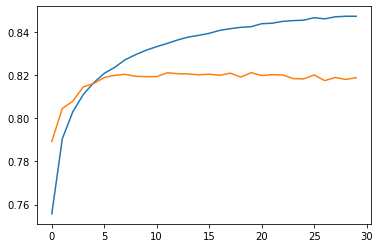
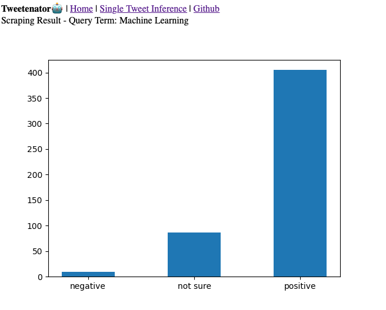

I recently made a few updates to one of my old projects called Tweetanator. Original idea was to create a chrome plugin that would allow users to filter their Twitter feeds based on a sentiment. I quickly realized that would involve writing a decent amount of Javascript and decided not to go down that route :)
Instead I ended up creating a simple flask app where users had to type out their tweet and the app would determine the sentiment of the tweet. That was a few years ago and as we all know in the ML world a few years means it's actually very old. I thought it would be cool to train a new model and add a few features to the app.
If you don't want to read about the updates and just want to check out the app here's the link: https://tweetanator.novarac.com
Updates
Model
For a new model I ended up going with a simple LSTM network. Model was trained on sentiment140 dataset. Here's the train/validation accuracy graph (blue line is training, orange is validation):

Results shown above were after 30 epochs. These are not SOTA numbers and an LSTM network is not a cutting edge model, but they are good enough for Tweetanator.
App
I added one major feature to the app. Users can now search Twitter for a specific topic and get a sentiment analysis breakdown of the results. Here's an example of how that looks like:

I also added a separate page for the old functionality of the app (type out the tweet and get the sentiment).
Closing thoughts
I had a lot of fun updating Tweetanator. It's amazing to see the progress that happened in ML in the past few years and I'm looking forward to the future!
Thank you to people over at sentiment140 for providing the dataset and thank you for taking the time to read this! If you have any feedback please feel free to reach out via Twitter or Github!
P.S. You probably noticed there is almost no CSS. If you feel like adding that or any other features feel free to open up a PR :)